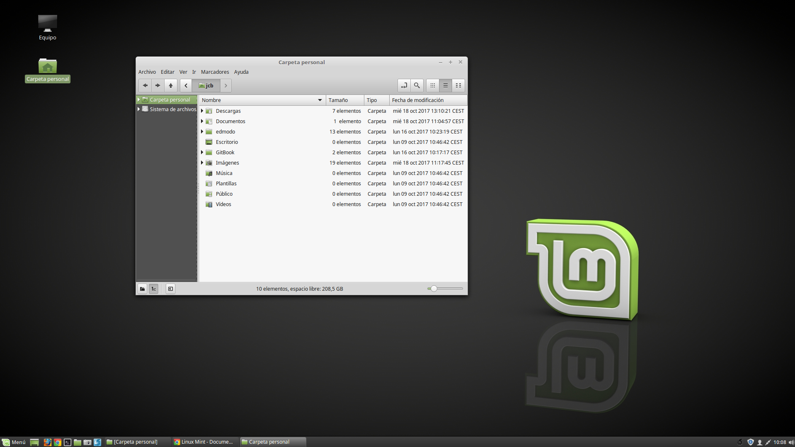
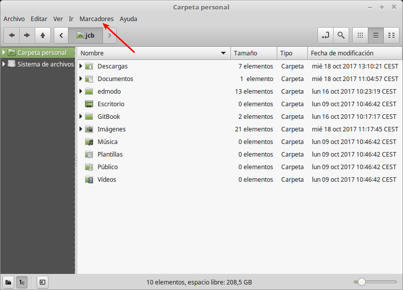

Explorador de Archivos: Características y Funcionalidades
En Linux existen diferentes exploradores de archivos: Nautilus, konqueror, Thunar, etc.
Linux Mint usa como explorador de archivos Nemo, un fork de Nautilus. Nemo tiene un uso muy similar a exploradores de otros sistemas operativos, lo que hace que el cambio de uno a otro apenas se perciba.
La forma más rápida y eficiente de lanzar este Explorador de Archivos es tecleando el atajo Tecla de Windows + E (la tecla de Windows suele encontrarse en la fila inferior del teclado, a la izquierda de la barra espaciadora y la tecla ALT), o directamente pinchando con el ratón sobre el icono de la carpeta que hay en la barra inferior del Entorno de Escritorio.

Al ejecutar el explorador de archivos se abre una ventana donde puedes gestionar todas las acciones relacionadas con archivos de una forma muy intuitiva:

Este explorador de archivos te permite copiar,pegar, renombrar y mover los archivos y carpetas de una forma intuitiva y similar a otros sistemas operativos como Windows o MacOS
También te permite buscar archivos y carpetas en el equipo o en diferentes partes de éste pulsando el icono de búsqueda:

Entre sus características y funcionalidades más destacables podrían destacarse las siguientes:
- Es software libre. Por esta razón cualquier programador puede reutilizar el código y mejorarlo, haciendo que de ello nos beneficiemos toda la comunidad de usuarios.
- Permite la apertura de multiples pestañas, lo que facilita el movimiento de archivos entre diferentes directorios (arrastrar y soltar). Para abrir una nueva pestaña puede teclearse la combinación CONTROL + T o Archivo→ Nueva pestaña.
- Permite crear marcadores para acceder de una manera muy rápida a los directorios que elijamos. Estos marcadores se pueden crear pulsando la combinación de teclas CONTROL + D estando situados dentro del directorio al cual queremos crear un acceso rápido o seleccionando Añadir Marcador en el menú de marcadores. Los marcadores se incorporan en ese mismo menú y nos permiten acceder rápidamente a carpetas.

Facilita la desconexión de los dispositivos de almacenamiento externos (USB, CD/DVD, etc.)
Soporta varios modos de vista de iconos: Vista de icono, vista compacta, lista detallada. Para poder ver y cambiar entre los diferentes modos o vistas puede pulsarse las combinaciones "CONTROL + 1", "CONTROL + 2", "CONTROL + 3".
Permite realizar acciones sobre archivos pulsando con el botón derecho. Esta es una característica es muy importante ya que el Explorador de Archivos Nemo detecta al vuelo el formato de un archivo (p.e. PDF, TXT, EXE, etc.) independientemente de la extensión que se le haya asignado, y en función de este nos muestra todas las Acciones que tiene configuradas para su manipulación. Por ejemplo, en la siguiente figura se muestra como al pinchar con el botón derecho del ratón sobre una imagen de formato PNG nos aparecen una serie de funcionalidades, permite seleccionar el programa con el que abrimos dicho archivos de una lista de programas adecuados, o seleccionar establecerlo como fondo de pantalla. Todo esto son opciones que no aparecerían si el archivo seleccionado hubiera sido una canción MP3.
Permite suplantar al root o Administrador de máximo rango del sistema. Esto puede resultar útil cuando la cuenta de usuario con la que se ha iniciado sesión en Linux no tiene los privilegios/permisos necesarios para la manipulación de determinados ficheros. Lógicamente, para poder hacer esta suplantación será necesario que la cuenta de usuario sea administrador del sistema. Para hacer uso de esta funcionalidad tan sólo habrá que pinchar con el botón derecho del ratón sobre el archivo o directorio que queremos abrir con todos los privilegios y seleccionar la opción Abrir con permisos administrativos.